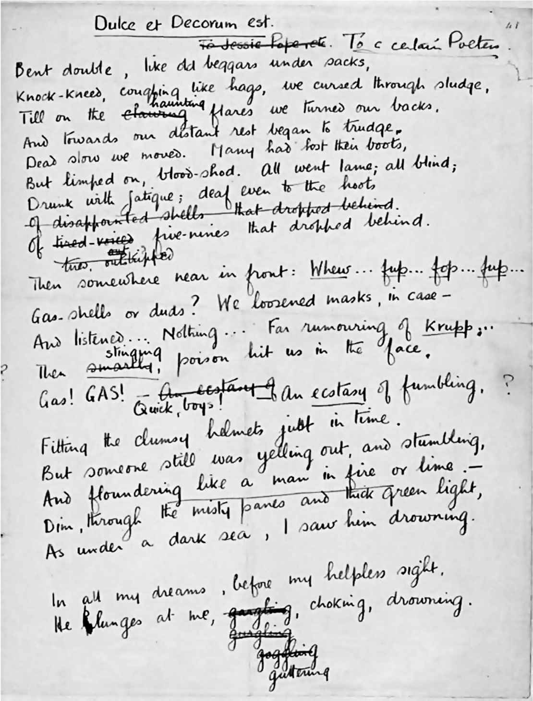
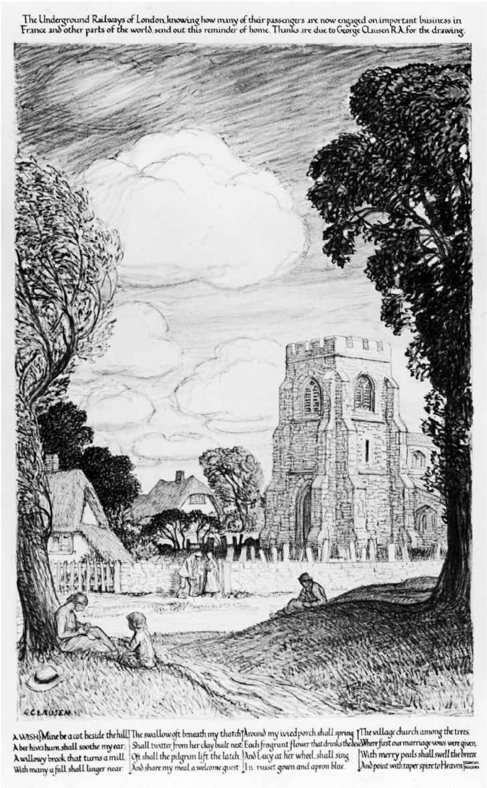

偶尔，诗人也有可能代表整个民族发言。2009年，卡罗尔·安·达菲成为第一位女性桂冠诗人。在她随后创作的一批诗作中，有一首动人的挽歌，纪念刚去世的最后两位参加第一次世界大战的英国士兵亨利·阿林厄姆和哈里·帕奇。这首诗的名字叫《最后的哨位》（可在线阅读），达菲在开头引用了威尔弗雷德·欧文的诗歌《怪异的相遇》（“在每一场梦里，就在我无助的眼前，/他向我扑来，生命流逝，快要窒息，即将湮没”），然后她继续想象战争结束之后——“哈里、汤米、威尔弗雷德、爱德华和伯特”——不仅他们都复活了，而且“到处是关爱、工作、儿童、天才、英国啤酒和美食”。在这首诗的结尾，达菲这样写道：
达菲在这首诗中使用的主导意象是倒退播放的电影胶片。我们记得那些模糊的黑白影像，年轻的士兵跳出壕沟，一大片人中弹倒下，就像割草机在草地上除草。想象一下他们复活后的样子。假如他们幸存下来：假如英格兰诗歌没有失去“威尔弗雷德”（·欧文）和“爱德华”（·托马斯）会怎样？不过，鉴于这些诗人至今依然拥有读者，他们其实已经幸存下来，但是大多数牺牲的士兵只会被家人记住，被刻在墓碑或战争纪念碑上。通过回顾往事并向同行致敬，诗歌真的能够逆转时光。
达菲在这首诗的第一段中，还引用了威尔弗雷德·欧文的另一句诗（“为国捐躯——不——是甜蜜的——不——是正确的”）。她在第二段中提到了这些已故诗人的名字，并且描写了受难的战马，以此来表现第一次世界大战的残酷。这样的写法与她的一位同行异曲同工：就在达菲的创作期间，儿童文学桂冠作家迈克尔·莫珀戈的作品《战马》被改编成戏剧，在国家剧院成功上演。在这首诗的最后一段中，达菲似乎是在暗指在爱德华·托马斯的尸体上发现的袖珍记事本。当时那个本子没有破损，不过炸弹产生的冲击力弄皱了纸页。是达菲的文字让过去的声音重新复活。
诗歌与逝者对话：“美好且正确”这句话让时光胶片继续回退。这是欧文采用的诗歌标题，源自古罗马诗人贺拉斯一首颂歌中经常被人引用的一行诗：“为国捐躯可谓美好且正确。”如果我们查看欧文的原始手稿，会发现还有其他诗人也加入了这场对话。我们在手稿中不仅可以看到欧文本人的仔细修改（在描写中了毒气濒临死亡的士兵时，他先后尝试了“发出咕噜的声音”、“发出咯咯的声音”、“瞪大眼睛看着”、“生命流逝”等表述），而且也可以看到另一位诗人西格弗里德·萨松所做的标记，他帮助欧文进一步完善了这首作品。他们曾经在克雷格洛克哈特战地医院共同接受治疗，以缓解长期战斗带来的精神压力。欧文原本打算使用“致杰西·蒲柏及其他人”或“致某位女诗人”作为这首诗的标题，这足以说明，他批评的对象并非贺拉斯，而是为这个“古老的谎言”辩护的某些现代人士。杰西·蒲柏是那些狂热的爱国诗人之一，她定期在《每日邮报》上发表诗歌，呼吁年轻人加入战斗，前往佛兰德斯的泥沼为国捐躯。在其中一首诗中，她这样写道：

图4“美好且正确”：威尔弗雷德· 欧文的原始手稿，可以看到作者本人的修订，以及西格弗里德· 萨松的建议：
“再没有这般纯真”，让菲利普·拉金感慨的是发生在1914年的一幕场景，那些戴着布帽的男人排着歪歪扭扭的长队，准备签名入伍，为国王和国家作战。他们“露齿微笑，仿佛这就是/八月银行假日里的一场消遣活动”（《一九一四》，收录于《降灵节婚礼》，1964）。
当战争爆发时，诗歌能做些什么？欧文有句名言：“重要的是，我并不关心诗歌。我的题材是战争，以及战争引起的悲悯。诗歌存在于悲悯之中。”他和萨松以及艾萨克·罗森博格带着愤怒和悲伤的情绪，讲述了战壕里的真实情形。在他们之后，任何人提及“美好且正确”，总是带着反讽的语气或者含蓄的态度。
在某些方面，他们塑造了战争诗歌的风格，没有人能够超越他们——虽然基思·道格拉斯在第二次世界大战期间做了令人敬佩的尝试。
对士兵而言，诗歌可以成为一种慰藉，就像丁尼生的《悼念集》对维多利亚女王的意义一样。第一次世界大战期间，西线战场的许多士兵背包里都放着一本A.E.豪斯曼的挽歌体诗集《一个什罗普郡的小伙子》（1896）。相比杰西·蒲柏倡导的那种爱国主义理念，诗歌可以提供一种更微妙的爱国形式。以生动的乡村散文著称的作家爱德华·托马斯在被问到为什么加入“艺术家步兵团”（英国的一支预备役部队）时，弯下腰，捧起一抔英格兰的土壤，答道：“为了这个。”战争让他成为一名诗人。由伦敦地铁公司资助的一幅征兵海报用特殊的方式来呈现英格兰的样子（当时有许多人认为，他们作战就是为了保卫这样的英格兰），它将一幅画着乡村教堂墓地的图像，配上了浪漫主义诗人塞缪尔·罗杰斯描写安逸乡村生活的几行诗句。
在战乱时期，乡村生活的节奏提供了一种稳定、持久的意象。在《马勒》（1916）这首诗中，爱德华·托马斯顺着罗杰斯的那几行诗继续思考，他的话里没有任何的极端爱国主义情绪，也没有道德说教：“犁铧划过，蹒跚的马儿并排经过/我看着结块的土壤碎裂并翻转。”在创作《正值“打碎列国”之际》（1916，标题暗指《旧约》中的先知耶利米，“你是我的战斧，是我打仗的兵器：我要用你打碎列国”）这首诗时，托马斯·哈代曾有过类似的灵感：

图5“愿望”：一战征兵海报，由乔治· 克劳森绘图，描写乡村生活的诗句出自浪漫主义诗人塞缪尔· 罗杰斯